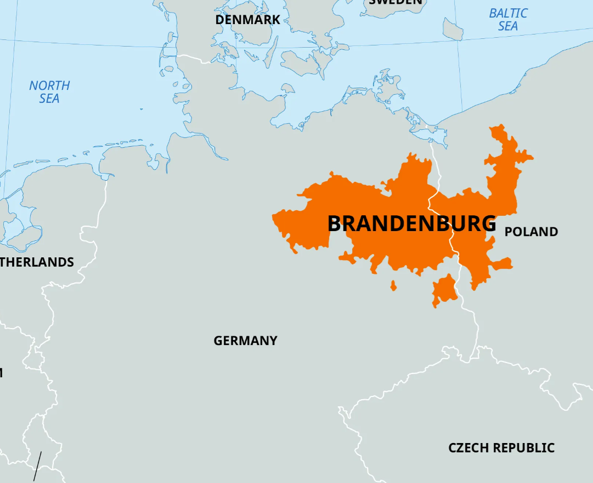
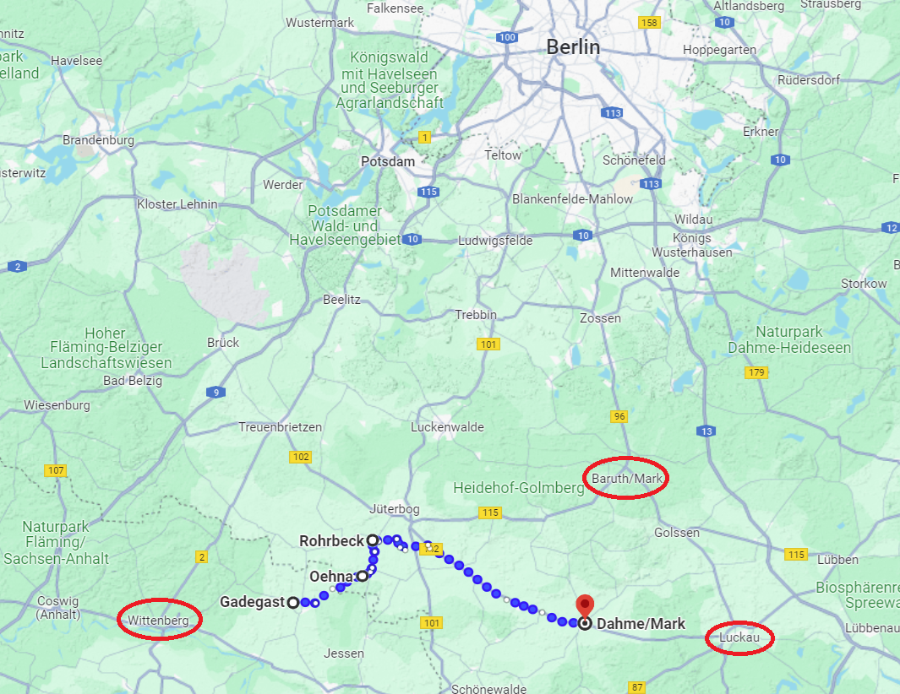
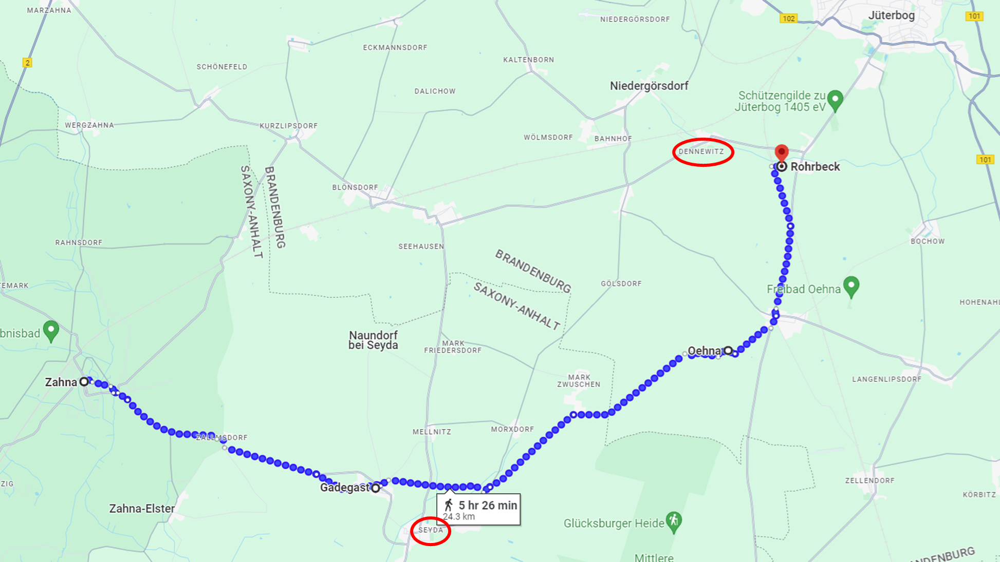
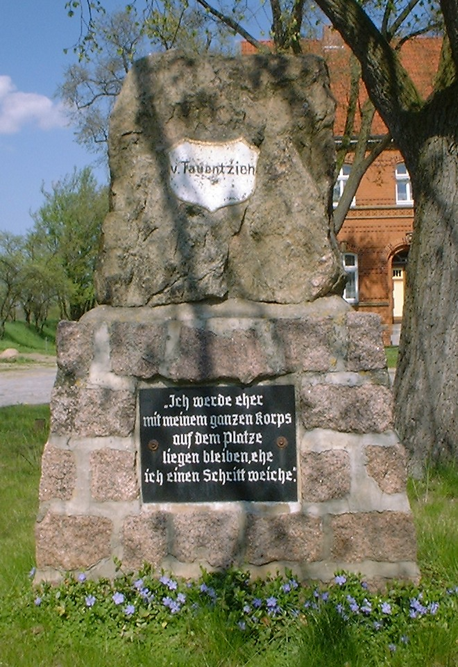

덴너비츠 전투 (3) - 남자가 한을 품으면
게시: 2024-07-22T06:30:00+09:00
잔나(Zahna)를 지나 위터보그(Jüterbog)로 가는 길은 작센과 브란덴부르크 즉 프로이센의 국경 지대였는데, 이 일대는 그야말로 평야 지대로서 간간히 나타나는 낮은 언덕, 시냇물과 습지 외에는 거의 아무런 장애물이 없었습니다. 원래 군대가 행군할 때는 소규모 정찰대를 앞세워 지형과 함께 적의 출현을 경계하는 것이 정상이었습니다. 그리고 그런 정찰대로 쓰라고 존재하는 것이 바로 기병대였습니다. 그런데 위터보그를 향해 진격하던 네의 베를린 방면군은 희한하게도 그런 정찰기병대를 두지 않고 행군하고 있었습니다. 여기에 대해서는 뚜렷한 이유가 알려지지 않고 있는데, 아마 당시 공포의 대상이었던 코삭 기병대에 대한 두려움 때문이 아니었을까 합니다. 소규모 기병대를 앞세웠다가 혹시라도 코삭들과 마주치게 되면 가뜩이나 부족한 기병대의 손실이 더 커질 것이라는 두려움이 있었을 것입니다.

(역사적인 브란덴부르크 공국의 영토인데, 쉽게 이야기하면 베를린을 중심으로 하는 지역명이라고 보시면 됩니다. 흔히 통일 이전의 베를린을 수도로 하는 독일 국가를 프로이센이라고 부르는데, 사실 프로이센은 저 멀리 동쪽의 쾨니히스베르크를 수도로 하는 공국의 이름입니다. 지금은 쾨니히스베르크는 러시아의 칼리닌그라드가 되었고, 그 일대의 구 프로이센 영토는 폴란드와 리투아니아의 땅이 되어 독일 역사에서 사라졌습니다. 브란덴부르크 공국과 프로이센 공국이 귀족간의 결혼으로 합해지면서 이름을 프로이센으로 정했을 뿐, 소위 말하는 프로이센 사람이란 브란덴부르크 사람을 뜻합니다.)
게다가 어차피 9월 6일 아침은 정찰이 매우 어려운 날씨였습니다. 그 날은 북서풍이 강하게 불었는데, 건조한 그 일대 브란덴부르크 평원에는 평소에도 모래가 많은 편이었고 병사들이 행군하는 도로 상에는 특히 그랬습니다. 손자병법에도 병사들이 행군하며 일으키는 모래 먼지를 보고 적의 이동을 관측하라는 언급이 나오는데, 그렇게 거센 바람이 불다보니 병사들의 군화에 채이는 먼지가 잔뜩 날려 시계가 좋지 않았습니다. 아무튼 이 날 아침, 네는 베르트랑의 제4군단을 선두로, 그 뒤를 이어 레이니에의 제7군단, 그 뒤로 우디노의 제12군단을 차례로 출발하도록 명령했습니다. 네가 궁극적으로 목표물로 삼은 것은 약간 남동쪽으로 50km 떨어진 담머(Dahme)였습니다. 베를린은 북북동 방향이었는데 이렇게 방향을 약간 남동쪽으로 잡은 이유는 9월 6일까지 루카우에 도착하겠다는 나폴레옹의 말 때문이었습니다. 담머는 루카우 서쪽 약 20km에 떨어진 지점이었거든요. 그러니까 네는 남쪽에서 올라올 나폴레옹과 하루 행군거리 정도의 간격을 두고 합세하여 베를린에 진격할 생각이었던 것입니다. 50km 떨어진 담머까지 그 날 저녁까지 도착하는 것은 사실상 어려웠기 때문에 네의 마음은 좀 다급했을 것입니다.

(네가 의도한 큰 그림입니다. 그는 루카우까지 올라와 자신을 지원해주겠다는 나폴레옹의 말을 믿었을 것입니다. 그러나 네가 9월 6일 저녁까지 담머에 도착했다고 하더라도 나폴레옹은 별로 기뻐하지 않았을 것입니다. 원래 나폴레옹이 9월 6일까지 도착하라고 한 곳은 담머의 훨씬 북쪽인 바루트(Baruth)였거든요. 그러나 나폴레옹 본인도 9월 6일까지 루카우에 도착하겠다고 한 약속은 전혀 지키지 못했습니다.) 이때 네의 행군 명령은 다소 시시콜콜한 편이었습니다. 이는 하나의 길로 3개 군단을 움직이다보니 여러 부대가 좁은 도로 상에서 교통 체증을 일으키지 않도록 하기 위함이었습니다. 두번째로 출발한 레이니에에게 주어진 네의 명령은 위터보그 남서쪽 약 5km 지점인 로어벡(Rohrbeck)으로 향하되, 가더가스트(Gadegast)와 오엔나(Oehna)를 거쳐 가라는 것이었습니다. 그리고 그 날 아침 자이다(Seyda)에 주둔하고 있던 우디노에게는 레이니에가 바로 북쪽에 위치한 마을인 가더가스트를 지나 오엔나를 통과하면 그때 출발하라고 명령했습니다.

(레이니에에게 주어진 행군 명령입니다. 우디노가 위치한 자이다(Seyda)와 타우엔치엔의 프로이센군이 위치하고 있던 덴너비츠(Dennewitz)의 위치는 붉은 원으로 표시했습니다.) 그런데 여기서 사소한 문제가 좀 생깁니다. 레이니에가 행군을 하다보니, 그 일대의 지형이 평탄하고 걷기에도 좋았기 때문에 굳이 가더가스트-오엔나-로어벡으로 이어지는 길을 걷지 않고 그냥 로어벡를 향해 직선거리로 가도 되겠다는 판단을 한 것입니다. 문제는 레이니에가 이 경로 변경을 네는 물론 우디노에게도 통보하지 않았다는 것이었습니다. 거기까지도 뭐 큰 문제는 아니었습니다. 진짜 문제는 네가 총사령관이 되어 자신이 실패한 작전을 성공으로 이끄는 것을 우디노가 매우 시샘하고 있었다는 것이었습니다. 아마도 보병들이 행군하며 일으키는 흙먼지를 통해 레이니에가 어디로 이동하는지 잘 보였을 것 같은데, 우디노는 놀랍게도 '레이니에가 아직 오엔나를 통과하지 않았으므로 우리 제12군단은 네 사령관의 명령에 따라 계속 여기서 대기한다'라고 어린애 같은 결정을 내렸습니다. 결국 제12군단은 오후 1시가 훌쩍 넘을 때까지도 자이다에서 꿈쩍하지 않았습니다. 이건 정말 프랑스군 원수답지않은 치졸한 행동이었습니다. 우디노가 자이다에서 한창 심통을 부리고 있던 시각인 오전 11시, 가장 먼저 출발했던 베르트랑은 기병 정찰대를 앞세우지 않은 대가를 치렀습니다. 덴너비츠 인근의 언덕에 자리잡고 있던 적군으로부터 난데없는 공격을 받은 것입니다. 타우엔치엔의 프로이센군 제4군단의 일부인 약 1만명과 대포 19문의 병력이었습니다. 미리 알고 있던 적군의 위치는 아니었지만, 어차피 여기는 적국인 프로이센이었으므로 베르트랑은 당황하지 않고 병력을 전개하여 응전했습니다. 베르트랑의 제4군단은 2만2천 병력에 64문의 대포를 갖추고 있었으므로 전투의 결과는 뻔했습니다. 프로이센군은 열심히 싸웠으나 결국 위기에 빠졌습니다.

(덴너비츠에 있는 타우엔치엔의 승전 기념비입니다. 저기에 쓰인 글자는 번역을 해보니 이렇습니다. "한 걸음이라도 물러서느니 차라리 여기서 나의 군단 전체와 함께 여기 쓰러지겠다" Ich werde eher mit meinem ganzen korps auf dem Platze liegen bleiben, ehe ich einen Schritt weiche.) 그러나 이 날 기병 정찰대를 앞세우지 않았던 대가는 거기서 끝나지 않았습니다. 여기에 적 부대가 있었다는 것은 근처에 다른 적 부대가 또 있을 수도 있다는 뜻이었는데, 아니나 다를까 곧 서쪽에서 커다란 먼지 구름이 다가오는 것이 보였습니다. 인근에 있다가 포성을 듣고 달려온 뷜로의 프로이센 제3군단이었습니다. 이렇게 뷜로가 가세하면서 전세는 확 뒤집혀 베르트랑은 수세에 몰립니다. 하지만 길 하나를 따라 줄줄이 오느라 늦어서 그렇지, 베르트랑에게도 원군은 있었습니다. 비록 거의 2시간 후에나 도착하기는 했지만, 레이니에의 군단이 총사령관인 네와 함께 현장에 도착했습니다. 그러자 다시 전세가 뒤집혔습니다. 이렇게 양측의 각 부대들이 현장에 도착하면서 전투는 양측이 밀고 밀리는 혈전으로 발전되었는데, 승부는 점점 프랑스군쪽으로 기울고 있었습니다. 프로이센군은 타우엔치엔과 뷜로가 서로를 적극적으로 돕긴 했지만, 정작 가장 많은 병력을 가진 베르나도트가 애초부터 소극적인 자세로 저 멀리 후방에 위치했기 때문에 현장에 도착하는데 시간이 훨씬 더 오래 걸렸기 때문이었습니다. 심지어 오후 1시까지도 자이다에서 빈둥거리던 우디노의 제12군단까지 덴너비츠에 도착한 3시 반 무렵까지도 베르나도트의 본대는 도착할 기미가 보이지 않았습니다. 가뜩이나 밀리고 있던 시점에 우디노까지 현장에 나타나 힘을 보태자, 이제 네의 승리는 확고한 것이 되는 것처럼 보였습니다. 그런데, 여기서 정말 뜻밖의 일이 벌어집니다. Source : The Life of Napoleon Bonaparte, by William Milligan Sloane Napoleon and the Struggle for Germany, by Leggiere, Michael V With Napoleon's Guns by Colonel Jean-Nicolas-Auguste Noël https://en.wikipedia.org/wiki/Battle_of_Dennewitz https://battlefieldanomalies.com/napoleonic-wars/the-battle-of-dennewitz https://en.wikipedia.org/wiki/Bogislav_Friedrich_Emanuel_von_Tauentzien https://en.wikipedia.org/wiki/Friedrich_Wilhelm_Freiherr_von_B%C3%BClow